HoaSonVL là chương trình chơi tự động cho Võ Lâm Truyền Kỳ 2.0. Nó chạy cạnh game, đọc tình trạng nhân vật và tự làm thay bạn những việc lặp đi lặp lại: luyện công, nhiệm vụ hằng ngày, mua thuốc, sửa đồ, theo sau đồng đội, tự vệ khi bị đánh.
Giải nén ra một thư mục bất kỳ, ví dụ D:\HoaSonVL. Bên trong phải có đủ HoaSonVL.exe, vlhook.dll và data\data.pak; ba tệp này luôn đi cùng nhau, đừng tách ra.
Mở HoaSonVL.exe. Không cần cài đặt thêm gì, thư mục config\ và userdata\ sẽ tự sinh.
Nếu phần mềm diệt virus giữ lại vlhook.dll thì thêm cả thư mục HoaSonVL vào danh sách loại trừ rồi giải nén lại.
Cập nhật bản mới
Bot tự kiểm tra bản mới sau khi mở khoảng nửa phút, rồi vài giờ một lần. Có bản mới thì hiện hộp "HoaSonVL - cập nhật" ghi số bản và những gì thay đổi, hỏi "Cập nhật ngay?".
Chọn Yes: bot tải về, tự đóng và mở lại. Các nhân vật đang chạy đứng yên vài giây rồi làm tiếp; game không bị đóng. Thiết lập, lộ trình, danh sách giữ nguyên.
Chọn No: lần mở sau bot hỏi lại.
Tệp cũ được giữ lại cạnh chương trình với đuôi .old-… và tự dọn sau.
Cập nhật tay (khi bot không hỏi, hay máy không ra được GitHub): tải HoaSonPK.zip mới nhất ở trang phát hành, tắt HoaSonVL, chép đè ba tệp HoaSonVL.exe, vlhook.dll, data\data.pak. Không chép đè hay xoá config\ và userdata\, thiết lập nằm ở đó. Số bản đang dùng hiện trên thanh tiêu đề cửa sổ.
Thư mục chương trình
Tệp / thư mục
Dùng để
HoaSonVL.exe
Chương trình chính. Mở nó là đủ, không cần cài đặt.
vlhook.dll
Phần được nạp vào game để bot điều khiển nhân vật. Luôn để cạnh HoaSonVL.exe.
data\
Dữ liệu bản đồ, NPC, vật phẩm, đường đi. Đừng xóa.
config\
Thiết lập của từng nhân vật. Tự sinh khi chạy, được mã hóa theo tài khoản Windows đang dùng (máy khác không đọc được, xem mục Tài khoản để mang đi).
userdata\
Tệp do bạn lưu: lộ trình luyện công, danh sách kỹ năng, danh sách tên.
vlbot.log
Nhật ký hoạt động, giữ hai ngày gần nhất. Gửi tệp này khi cần báo lỗi.
Các bước đầu tiên
Mở game và đăng nhập nhân vật như bình thường (hoặc để bot tự mở game, xem tab Tài khoản). Mở HoaSonVL, nhân vật sẽ hiện trong bảng ở trên.
Muốn chạy hơn 8 game trên một máy: mở HoaSonVL trước rồi mới mở game (game tự giới hạn 8 cửa sổ, báo "Cua so game dat gioi han toi da"). Lỡ mở game trước bot thì tắt hết game rồi mở lại khi bot đang chạy.
Bấm vào tên nhân vật để chọn, rồi đặt thiết lập ở các tab bên dưới. Mỗi nhân vật có thiết lập riêng và được nhớ tự động, không cần bấm lưu.
Tick vào ô vuông trước tên là bật bot cho nhân vật đó. Chưa tick thì bot chỉ xem, không điều khiển gì.
Rê chuột lên bất kỳ ô nào trong giao diện đều có chú thích ngắn hiện ra, bên ngoài cửa sổ bot (sát mép trái, không đủ chỗ thì mép phải), ngang con trỏ, nên không che ô đang chỉnh. Hướng dẫn này nói kỹ hơn các chú thích đó.
Bot tự kiểm tra bản mới mỗi vài giờ và hỏi trước khi cập nhật.
Cách giao diện được sắp xếp. Cửa sổ chia làm hai phần: bảng nhân vật ở trên, sáu tab ở dưới. Bốn tab đầu (Tác vụ, L. công, Tự vệ/PK, Hậu cần) là những thứ bạn chỉnh hằng ngày. Thứ chỉ đặt một lần nằm trong các trang con, mở bằng nút có dấu ▶ ở cuối mỗi tab; trang con mở ngay tại chỗ, bấm "◀ Quay lại" hoặc bấm lại tab để về.
Giao diện rộng (bấm đúp thanh tiêu đề): bảng đầy đủ cột, bản đồ nhỏ, các tab ở bên phải.
Bảng liệt kê mọi nhân vật đang mở game trên máy, và cả nhân vật bot đã biết mà chưa mở game (dòng "chưa mở game"). Mỗi dòng cho biết nhân vật đang làm gì, ở bản đồ nào (kèm toạ độ như game), cấp, máu, tiền, số vé… Màu chữ cho biết tình trạng: xanh dương là đang trong game; vàng sẫm là được tick mà đang đứng không có việc (hoặc đang tạm dừng); hồng là đội trưởng, hoặc nhân vật tick Đội trưởng ở trang Tổ đội (chữ đậm khi đang dẫn một đội); đỏ là game đã mở mà chưa vào game hoặc mất kết nối; đen là chưa mở game.
Tick ô vuôngBật / tắt bot cho nhân vật đó. Đây là công tắc quan trọng nhất. Bot nhớ các tick: mở lại bot thì nhân vật đã tick lần trước được tick lại.Bấm vào dòngChọn nhân vật để xem và sửa thiết lập ở các tab. Giữ Ctrl hoặc Shift để chọn nhiều nhân vật và sửa cùng lúc một ô (ví dụ bật Tự theo sau cho cả nhóm).Kéo thả dòngĐổi thứ tự nhân vật trong bảng.Bấm đúp vào dòngẨn hoặc hiện lại cửa sổ game của nhân vật đó. Tiện khi chạy nhiều game mà màn hình chật.Chuột phải vào tiêu đề cộtMở hộp "Tùy chọn hiển thị" để chọn cột nào hiện (ảnh bên dưới). Kéo tiêu đề cột để đổi chỗ, kéo mép để đổi rộng.Chuột phải vào dòngMenu của các dòng đang chọn: Thêm... nhân vật chưa mở game (tên + môn phái), Xóa nhân vật chưa mở game (cả thiết lập, hỏi trước); lập chiến đội Trường Ca, làm đội trưởng, giải tán (mục Trường Ca); Lưu / Đọc toàn bộ cấu hình (như Xuất / Nhập thiết lập ở tab Tài khoản); xuất bảng ra tệp CSV (cả bảng hoặc các dòng đã chọn); Tùy chọn hiển thị; Reset thống kê (EXP, Thu nhập, Phù/Chết) cho các dòng đã chọn; Gán proxy / Hủy gán proxy; Đăng nhập (đã chọn, từng nhân vật, tất cả: lần lượt từng người) / Hủy đăng nhập; Thoát game đã chọn (hỏi trước); Nhật ký (mở vlbot.log). Mục chữ xám là chưa dùng được với các dòng đang chọn, hoặc chưa có trong bản này.Bấm đúp thanh tiêu đềChuyển sang giao diện rộng: bảng chiếm bên trái với đủ cột, bên phải là bản đồ nhỏ của nhân vật đang chọn (chấm xanh là mình, chấm khác là người / quái quanh) và các tab. Bấm đúp lần nữa để về cửa sổ hẹp.Cột Tác vụViệc bot đang làm, tóm tắt một dòng, ví dụ "luyện công", "mua thuốc", "theo sau X", "tắt (chưa tick)".
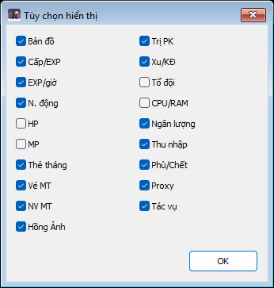
Tùy chọn hiển thị. Lần đầu dùng chỉ hiện Nhân vật, Bản đồ, Cấp/EXP, EXP/giờ, Tác vụ; các cột khác bật thêm ở đây.
Cột
Ý nghĩa
Cấp/EXP
Cấp và phần trăm kinh nghiệm hiện có.
EXP/giờ
Kinh nghiệm kiếm được mỗi giờ trong ngày (sang ngày mới về 0; tắt mở lại bot vẫn giữ, lúc bot tắt không tính). Bấm tiêu đề cột để đổi sang EXP hôm nay (tổng kinh nghiệm kiếm được trong ngày) và ngược lại. Dùng để so bãi luyện công nào tốt hơn.
N. động
Điểm năng động hôm nay.
HP, MP
Máu và nội lực hiện có / tối đa.
Thẻ tháng, Vé MT, NV MT
Ngày thẻ tháng còn lại, số vé Mặc Thạch, tiến độ nhiệm vụ Mặc Thạch (đã làm / tổng).
Hồng Ảnh, Trị PK, Xu/KĐ
Thời gian Hồng Ảnh còn lại, điểm PK, xu và kim đỉnh.
Tổ đội
"đội trưởng" nếu nhân vật đang dẫn đội, không thì tên đội trưởng; trong ngoặc là số người trong đội.
Phù/Chết
Số lần về thành bằng phù và số lần chết trong ngày (sang ngày mới về 0, tắt mở lại bot vẫn giữ). Cột này tăng nhanh là bãi đang không an toàn.
Ngân lượng
Tiền trong hành trang cộng tiền trong rương, tính bằng vạn.
Thu nhập
Tiền kiếm được hôm nay (tính cả tiền trong rương), sang ngày mới về 0.
CPU/RAM, Proxy
Game đó đang tốn bao nhiêu máy (CPU, RAM, số khung hình mỗi giây, KB/s nhận ↓ / gửi ↑) và đi qua proxy nào, kèm tình trạng: ổn, chập chờn, LỖI, chờ đăng nhập, đang gắn. Có tên một chương trình proxy ngoài (như Proxifier) là chương trình đó cũng đang điều hướng game; "⚠ chồng" là nó chồng lên proxy của bot.
Tab Tác vụ
Tab mở đầu: chọn bot làm việc gì, theo thứ tự nào, và vài công tắc chung dùng cho mọi việc.
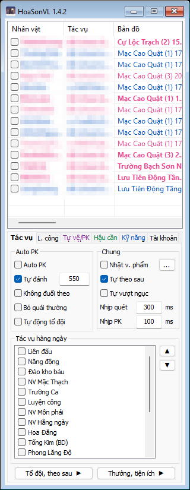
Tab Tác vụ.
Khung Auto PK
Dành cho lúc bạn tự cầm chuột đánh nhau (công thành, săn boss, Tống Kim). Bật lên là bot bỏ mọi tác vụ khác, bạn tự đi, bot chỉ lo ra chiêu.
Auto PKBật chế độ đánh tay. Bot tự ra kỹ năng (tab Kỹ năng) lên đối thủ trong phạm vi, bạn tự di chuyển. Cũng bật / tắt bằng Ctrl+P trong game.Tự đánh + sốTự ra chiêu lên người chơi ngoài đội (rồi quái, nếu không bỏ) ở cách nhân vật trong khoảng này. Số là khoảng cách tính theo đơn vị của game; 550 là tầm vừa, 1250 là rất xa.Không đuổi theoĐối thủ chạy ra ngoài phạm vi thì thôi, không đuổi. Không tick: đuổi đến khi nó chết hoặc mất dấu.Bỏ quái thườngChỉ đánh người chơi và boss. Dùng khi PK ở bãi có quái để khỏi phí chiêu vào quái.Tự động tổ độiKhi đang Auto PK vẫn tự lập / vào đội theo trang Tổ đội.
Khung Chung
Nhặt v. phẩmTự chạy tới nhặt tiền và đồ rơi quanh mình, rồi lọc trang bị nhặt được theo luật trong nút "…" (xem mục Nhặt vật phẩm & lọc đồ). Dùng chung cho luyện công lẫn Auto PK.Tự theo sauĐi theo đội trưởng hoặc người trong danh sách Theo sau (trang Tổ đội, theo sau). Chỉ theo khi đang Luyện công hoặc Auto PK; ở chiến trường Tống Kim cần bật Auto PK. Cũng bật / tắt bằng Ctrl+E.Tự vượt ngụcBị nhốt vào ngục vì PK thì tự hối lộ Lao Đầu để ra (Đại lao tốn 100.000 lượng, thiếu thì rút rương) rồi làm tiếp. Không tick: đứng chờ mãn hạn.Nhịp quétBao lâu bot nhìn lại quanh mình một lần khi đánh quái (mili giây). 300 là vừa; thấp hơn nhanh hơn nhưng tốn máy hơn.Nhịp PKNhư trên nhưng khi đánh người chơi. Nên để thấp (100) để không chậm hơn đối thủ.
Khung Tác vụ hàng ngày
Danh sách việc bot có thể làm. Tick việc muốn làm, dùng ▲ ▼ để xếp thứ tự. Bot xét từ trên xuống: việc nào ở trên mà đang có việc để làm (đến giờ Liên đấu, chưa làm Hằng ngày hôm nay…) thì làm trước, xong mới tới việc dưới.
Luyện công lúc nào cũng "có việc". Mọi tác vụ nằm dưới Luyện công sẽ không bao giờ tới lượt. Muốn làm nhiệm vụ rồi mới luyện công thì kéo Luyện công xuống dưới các nhiệm vụ. Muốn đang luyện công vẫn đi Liên đấu đúng giờ thì để Liên đấu trên Luyện công.
Tác vụ
Bot làm gì
Luyện công
Đánh quái theo tab L. công. Về thành mua thuốc, sửa đồ khi cần rồi quay lại bãi.
Luyện công Tân thủ
Cho nhân vật mới (dưới cấp 60): làm chuỗi nhiệm vụ tân thủ của Bao Thập Bát (cấp 10 vào môn phái đã chọn), tự chọn bãi theo cấp, tự cộng điểm, tự mặc đồ nhặt được, tự ăn Tiên Thảo Lộ, tự lập đội. Chuột phải để chọn môn phái - nhánh (chưa chọn thì tác vụ không chạy) và cách cộng điểm. Chỉ tick được một trong hai: Luyện công hoặc Luyện công Tân thủ; tick cái này thì cái kia tự bỏ tick.
NV Môn phái, NV Hằng ngày, NV Mặc Thạch
Nhận, làm và trả nhiệm vụ. Hằng ngày và Mặc Thạch có hộp riêng để chọn bản đồ nhận và nơi lấy trang bị cần nộp; riêng Mặc Thạch còn mua (NPC, sạp người chơi) hoặc rèn món đó.
Năng động
Làm các hoạt động được tick trong hộp riêng cho tới khi đủ điểm năng động giới hạn.
Đào kho báu
Dùng Tàng Bảo Đồ trong túi (thiếu thì mở Túi Thần Bí), nhờ Phó Lôi Thư ở Long Tuyền Thôn giám định (2 vạn mỗi tấm), rồi đi tới chỗ đào và đào. Chuột phải: số tấm mỗi ngày, tiền giữ lại, hẹn giờ.
Liên đấu, Cấm Địa Phái
Đến giờ thì đi báo danh, vào trận và đánh. Chuột phải: hẹn giờ.
Tống Kim (BD)
Mỗi trận trong ngày (13:30, 20:00, 22:15): tới quan báo danh theo bên đã chọn, vào chiến trường là tính đã đi trận đó, rồi ra làm việc khác. Bot không ở lại đánh; muốn đánh trong trận thì bật Auto PK. Chuột phải: bên báo danh, hẹn giờ.
Hoa Đăng
Từ 19:00 tới 23:00: tới đèn Hoa Đăng Huy Hoàng (Hoa Sơn, Vũ Lăng Sơn hoặc Nhạn Đãng Sơn; mỗi nhân vật luôn một nơi, không thấy đèn thì sang nơi khác) và trả lời câu đố tới khi xong lượt hôm nay. Câu chưa biết thì chọn đáp án chưa từng sai, rồi nhớ đáp án đúng / sai cho mọi nhân vật. Có đáp án mà chưa đọc được câu hỏi: chờ 8 giây rồi chọn một đáp án. Gặp 3 hội thoại lạ: nghỉ 10 phút rồi thử lại. Chuột phải: hẹn giờ.
Trường Ca
Cả chiến đội (tối đa 6) vào Trường Ca Sơn Trang luyện công kinh nghiệm cao. Lập chiến đội ở bảng nhân vật, chuột phải dòng để thiết lập. Xem mục Trường Ca.
Nhận thưởng Thẻ tháng, Nhận buff Bang hội, Hít lửa trại
Các việc nhỏ mỗi ngày: tới Lễ Quan nhận thưởng thẻ tháng, nhận buff bang, đứng cạnh lửa trại.
Phong Lăng Độ
Đi mọi chuyến thuyền trong hẹn giờ (10:00, 13:00, 16:00, 19:00, 21:00, 23:00; lên thuyền từ HH:00 tới HH:10): mua thuốc nếu thiếu, tới bến ở Phong Lăng Độ, gặp Thuyền Phu, đến giờ thì lên thuyền. Trên thuyền luyện công quanh boong theo thiết lập Luyện công tới khi cập bờ, rồi về thành lưu rương lại (lên thuyền là điểm lưu bị đặt ở Tây Sơn Thôn). Dòng ghi số chuyến đã đi hôm nay / 6. Chuột phải: bến thuyền, hẹn giờ.
Chiến lệnh
Làm nhiệm vụ ngày của Chiến Lệnh bằng các tác vụ bot có: Tống Kim đủ 3 trận, Phong Lăng Độ 1 chuyến trọn, NV Mặc Thạch 10 mỗi ngày (thứ 2 thêm 30). Ngoài mùa Chiến Lệnh thì không làm gì. Chuột phải: chọn việc, nhận thưởng.
Bán hàng
Ghi "(sắp có)": chưa làm được trong bản này, không tick được.
Chuột phải vào một dòng (trừ Luyện công) để mở hộp thiết lập riêng của tác vụ đó, xem mục kế tiếp.
Hộp riêng của từng tác vụ (chuột phải vào dòng)
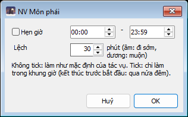
Hẹn giờ. Mọi tác vụ không có hộp riêng đều mở hộp này.
Hẹn giờ
Không tick: bot làm tác vụ theo giờ mặc định của nó. Tick: chỉ làm trong khung giờ đã đặt; đặt giờ kết thúc nhỏ hơn giờ bắt đầu nghĩa là qua nửa đêm. Ô Lệch (-30 đến 30 phút) cho mỗi nhân vật đi sớm hay muộn vài phút để nhiều nhân vật không cùng xếp hàng một lúc (số âm là đi sớm, số dương là muộn). Ô này chỉ có ở tác vụ có giờ mở (Tống Kim, Liên đấu, Hoa Đăng, Phong Lăng Độ, Hít lửa trại, Cấm Địa Phái) và tác vụ sang ngày mới lúc 0 giờ (NV Môn phái, NV Hằng ngày, NV Mặc Thạch, Nhận thưởng Thẻ tháng); ở nhóm sau, Lệch dương là chờ thêm từng ấy phút sau 0 giờ, Lệch âm không có tác dụng.
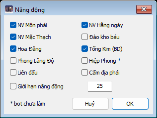
Năng động.
Năng động
Tick những hoạt động bot được dùng để kiếm điểm năng động. Ô Giới hạn năng động là mốc điểm; đủ mốc thì tác vụ coi như xong hôm nay. Hoạt động có dấu * là bot chưa làm được (Hiệp Phong). Giờ giấc của từng hoạt động lấy theo hẹn giờ của tác vụ cùng tên.
Phong Lăng Độ (mặc định không tick): một chuyến mỗi ngày; thuyền chạy (được +5 điểm) thì bot thoát game rồi vào lại (cần tài khoản ở tab Tài khoản, không có thì ở lại tới bờ), về Tây Sơn Thôn rồi về thành lưu rương lại. Tick thêm tác vụ Phong Lăng Độ thì đi trọn mọi chuyến; Chiến lệnh còn thiếu chuyến trọn hôm nay thì cũng ở lại tới bờ.
Ví dụ: tick Môn phái, Hằng ngày, Mặc Thạch, giới hạn 25: bot làm ba nhiệm vụ cho tới khi được 25 điểm rồi chuyển sang việc khác trong danh sách.
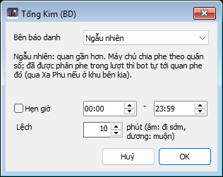
Tống Kim (BD).
Tống Kim (BD)
Bên báo danh: Tống, Kim, hoặc Ngẫu nhiên. Ngẫu nhiên nghĩa là báo danh ở quan gần hơn; máy chủ sẽ chia phe theo quân số, và nếu nhân vật đã được xếp phe trong lượt này thì bot tự tới đúng quan phe đó (đi Xa Phu nếu ở khu bên kia). Có hẹn giờ và lệch như các tác vụ khác.
Đào kho báu, Phong Lăng Độ
Hộp Hẹn giờ, thêm vài ô ở trên.
Số lần trong ngàyĐào kho báu: số tấm Tàng Bảo Đồ đào mỗi ngày (game cho tối đa 50).Số tiền giữ lại (vạn)Đào kho báu: tiền (túi + rương) giữ lại cho việc khác. Mỗi tấm giám định tốn 2 vạn; bot chỉ đào số tấm mà tiền trên mức này đủ trả.Bến thuyềnPhong Lăng Độ: Bến 1 (Thuyền Phu Giáp) và Bến 2 (Ất) có boss Thủy Tặc; Bến 3 (Bính) không có boss. Ngẫu nhiên: mỗi nhân vật luôn đi một bến theo tên. Thuyền đầy hoặc bị từ chối thì sang bến kế.
Thuyền chỉ cho lên từ HH:00 tới HH:10. Muốn tới bến sớm rồi đứng chờ cạnh Thuyền Phu thì đặt Lệch âm (ví dụ -10).
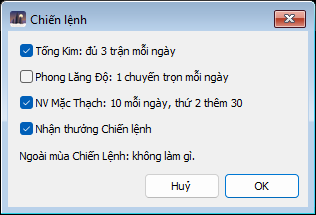
Chiến lệnh.
Chiến lệnh
Chọn các nhiệm vụ ngày của Chiến Lệnh mà bot làm bằng tác vụ sẵn có (mặc định tick cả bốn ô). Không có hẹn giờ riêng: mỗi việc theo hẹn giờ của dòng cùng tên. Ngoài mùa Chiến Lệnh: không làm gì.
Tống Kim: đủ 3 trận mỗi ngàyBáo danh, vào trận rồi ra ở cả 3 trận (13:30, 20:00, 22:15), kể cả khi không tick Tống Kim (BD).Phong Lăng Độ: 1 chuyến trọn mỗi ngàyLên thuyền và đánh tới khi cập bờ, không thoát game giữa chuyến. Dùng Bến thuyền của dòng Phong Lăng Độ; chết dọc đường thì chuyến sau đi lại.NV Mặc Thạch: 10 mỗi ngày, thứ 2 thêm 30Cho nhiệm vụ ngày "Hôm nay hoàn thành 10 NV Mặc Thạch" và mốc tuần 75 / 100: thứ 2 làm 40, các ngày sau 10, ngày lỡ thì làm bù; luôn giữ 1 nhiệm vụ cho mỗi ngày còn lại của tuần. Thay ô "Chỉ làm khi số nhiệm vụ còn lại" của NV Mặc Thạch.Nhận thưởng Chiến lệnhNhận điểm nhiệm vụ đã xong và quà theo cấp. Cùng một ô với "N.thưởng Chiến lệnh" ở trang Thưởng, tiện ích.
Các việc này chạy ở vị trí dòng Chiến lệnh trong danh sách tác vụ (hoặc ở dòng riêng của chúng nếu dòng đó cao hơn); Tống Kim và thuyền đến giờ thì chen trước NV Mặc Thạch của Chiến lệnh.
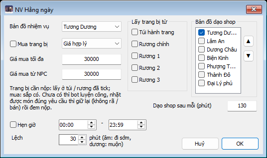
NV Hằng ngày.
NV Hằng ngày
Bản đồ nhiệm vụThành nhận nhiệm vụ.Lấy trang bị từNhiệm vụ đòi nộp trang bị: tìm món đó ở túi hành trang và các rương được tick (Rương 1-3 là rương mua thêm: nhân vật nào có mới dùng được).Mua trang bị, Bản đồ dạo shopHộp ghi "mua: sắp có": NV Hằng ngày chưa mua trang bị, các ô mua và dạo shop ở hộp này chưa có tác dụng (NV Mặc Thạch thì có, xem dưới).
Khi chưa có món đúng yêu cầu, bot đi luyện công và nhặt đồ; nhặt được món phù hợp thì giữ lại (không rã, không bán) để đem nộp.
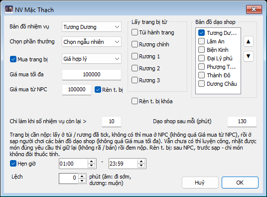
NV Mặc Thạch.
NV Mặc Thạch
Giống NV Hằng ngày (Bản đồ nhiệm vụ là thành gặp Mặc Thạch), thêm:
Mua trang bịKhông có món cần nộp ở túi / rương đã tick thì mua ở NPC (không quá Giá mua từ NPC); tick ô này thì còn mua ở sạp người chơi (không quá Giá mua tối đa). "Giá hợp lý": mua ở sạp đầu tiên có món; "Giá rẻ nhất": dạo hết rồi mua chỗ rẻ nhất.Bản đồ dạo shopCác thành bot đi dạo sạp người chơi để tìm món thiếu, theo thứ tự (▲ ▼). Dạo shop sau mỗi (phút): cách bao lâu mới dạo lại.Chọn phần thưởngPhần thưởng chọn khi trả nhiệm vụ, hoặc Chọn ngẫu nhiên.Rèn t. bị / Rèn t. bị khóaKhông có món cần nộp thì rèn (xem Rèn ở trang Chia sẻ, gom, giao, rèn) trước khi đi sạp: sau NPC, trước sạp. Rèn ra món không đòi thuộc tính.Chỉ làm khi số nhiệm vụ còn lại >Tuần có 100 NV Mặc Thạch (đếm lại từ thứ Hai): số còn lại phải lớn hơn số này mới làm tiếp, để dành cho các ngày sau. Hôm nay chưa làm thì vẫn làm 1 (được 10 điểm năng động); Chủ nhật làm hết. Khi tác vụ Chiến lệnh được tick (trong mùa) và có tick ô NV Mặc Thạch của nó thì lịch của Chiến lệnh thay ô này.
Không bao giờ bấm "Hủy Nh.vụ" của Mặc Thạch trong game. Hủy là mất cả chuỗi 25 nhiệm vụ, tức mất một vé Mặc Thạch. Bot cũng không bao giờ hủy.
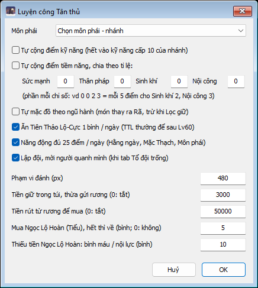
Luyện công Tân thủ.
Luyện công Tân thủ
Để một nhân vật vừa tạo tự lớn mà không cần đặt lộ trình hay kỹ năng.
Môn pháiChọn một dòng "môn phái - nhánh". Bắt buộc: chưa chọn thì tác vụ không chạy. Nhân vật vào môn phái này ở cấp 10 (môn phái phải hợp hệ và giới tính của nhân vật); nhánh quyết định kỹ năng bot dùng để đánh.Tự cộng điểm kỹ năngDồn hết điểm kỹ năng vào kỹ năng cấp 10 của nhánh.Tự cộng điểm tiềm năngChia theo tỉ lệ bốn ô Sức mạnh, Thân pháp, Sinh khí, Nội công. Ví dụ 0 0 2 3: cứ 5 điểm thì 2 vào Sinh khí, 3 vào Nội công.Tự mặc đồ theo ngũ hànhNhặt được đồ tốt hơn thì mặc ngay, món cũ đem rã hoặc để Lọc xử lý.Ăn Tiên Thảo Lộ, Năng động 25 điểmMỗi ngày ăn 1 bình Tiên Thảo Lộ-Cực (Tiên Thảo Lộ thường để sau cấp 60). Xong chuỗi tân thủ thì mỗi ngày làm Hằng ngày, Mặc Thạch, Môn phái cho đủ 25 điểm năng động (trừ khi bạn tự tick tác vụ Năng động).Lập độiTrang Tổ đội để trống thì tự lập đội, mời mọi người quanh mình và nhận người xin vào. Dù không tick ô này: các nhân vật trong bot đang làm chuỗi tân thủ trên cùng bản đồ tự vào chung một đội; lúc luyện công mà đang ở đội có đội trưởng là nhân vật trong bot thì đi theo sau đội trưởng đó.Phạm vi đánh (px)Đánh quái trong phạm vi này tính từ các điểm của bãi. Bãi không có điểm (luyện cả bản đồ): không giới hạn.Tiền giữ trong túi, rút, Ngọc Lộ HoànGiữ bao nhiêu tiền trong túi (thừa gửi rương), rút bao nhiêu để mua, mua bao nhiêu Ngọc Lộ Hoàn (Tiểu) khi hết và ngưỡng mua bình máu / nội lực khi thiếu tiền.
Bãi bot tự chọn theo cấp: dưới 15 bãi của thôn gần nhất; 15-19 bãi quái gần thành / thôn, chọn nơi đi tới rẻ nhất; 20-24 Hoa Sơn; 25-29 Cái Bang; 30-39 Tần Lăng; 40-49 Tây Phục Ngưu Sơn hoặc Hoàng Hà Nguyên Đầu; 50-59 Lưu Tiên Động, không tới được thì Thiên Tâm Động (hệ Hỏa: Thiên Tâm Động trước).
Trong lúc chạy, bot tự bật cho nhân vật này (không ghi vào thiết lập): Tự đọc thư, N. thưởng năng động, Điểm danh ngày, N.thưởng Chiến lệnh, tác vụ Nhận thưởng Thẻ tháng, sửa trang bị khi về thành, nhặt tiền; về thành bằng Thổ địa phù khi máu dưới 30% (mốc của bạn trong khoảng 30-40% thì giữ nguyên).
Trường Ca (chiến đội)
Trường Ca Sơn Trang là bản đồ luyện công kinh nghiệm cao, mở bằng Tín Vật Trường Ca ở NPC Trường Ca Môn Môn Nhân của 7 thành lớn. Một chiến đội tối đa 6 người: người mở nhận x8 kinh nghiệm, người khác x4 (nộp thêm Tín Vật để lên x8). Có từ bản 1.4.1.
Lập nhóm một lần là xong: cả nhóm nhận chung danh sách, người được bấm chuột phải đứng đầu (người mở sơn trang, cũng là đội trưởng). Đổi người mở: chuột phải người khác trong nhóm → Làm đội trưởng Trường Ca. Không phải gõ hay dán tên.
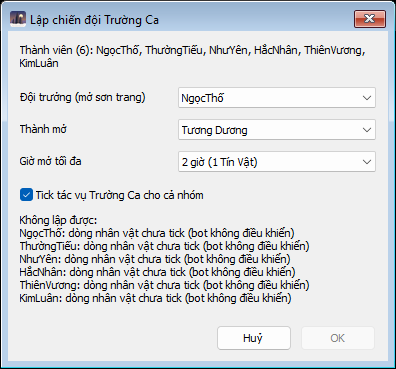
Lập chiến đội Trường Ca. Ảnh chụp lúc các dòng nhân vật chưa tick: hộp ghi lý do từng người và nút OK mờ.
Bước 1: lập chiến đội từ bảng nhân vật
Giữ Ctrl chọn 1–6 nhân vật trong bảng, rồi chuột phải lên nhân vật sẽ mở sơn trang và chọn Lập chiến đội Trường Ca.... Cả nhóm nhận chung một danh sách, người mở đứng đầu.
Đội trưởngNgười mở sơn trang, cũng là đội trưởng tổ đội. Mặc định là dòng vừa bấm chuột phải. Người này cần có Tín Vật (để ở túi hành trang cũng được, bot tự lấy ra túi đạo cụ khi mở).Thành mởThành có Trường Ca Môn Môn Nhân mà cả nhóm tới.Giờ mở tối đa2, 4 hoặc 6 giờ (1 Tín Vật mở 2 giờ, mỗi Tín Vật nộp thêm +2 giờ). Đây là mức tối đa: số thật do thời gian tu luyện còn lại của cả nhóm quyết định lúc tập trung.Tick tác vụTick tác vụ Trường Ca cho cả nhóm (mặc định có).
Mỗi người trong danh sách phải đạt cả bốn điều kiện, nếu không bot từ chối và ghi lý do:
Đã mở game và đã vào game.
Dòng nhân vật đang tick (bot điều khiển).
Không bận: đang Luyện công, ngồi hồi, đứng không hoặc làm việc vặt vài giây là rảnh; đang làm nhiệm vụ, sự kiện hay Auto PK là bận.
Không thuộc chiến đội đang đi Trường Ca.
Làm đội trưởng Trường CaChuột phải lên một nhân vật trong nhóm: đưa người đó lên đầu danh sách của cả nhóm (người mở mới).Giải tán chiến đội Trường Ca...Bỏ danh sách và bỏ tick Trường Ca của cả nhóm (hỏi trước).
Mỗi nhân vật chỉ ở một chiến đội. Lập nhóm mới mà lấy người của nhóm khác thì người đó chuyển sang nhóm mới; nhóm cũ không còn đủ người nên giải tán (bỏ tick Trường Ca), cần thì lập lại cho đủ. Hộp ghi rõ ai chuyển, nhóm nào giải tán trước khi bấm OK. Nhóm đang đi Trường Ca thì không lập / đổi được: chờ xong buổi.
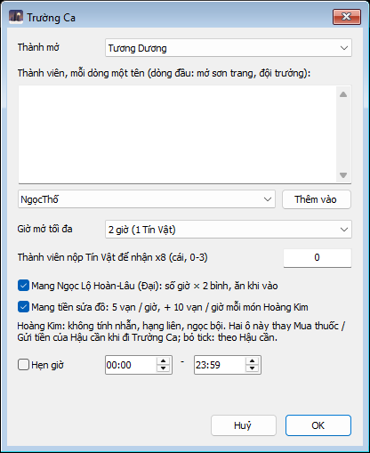
Hộp Trường Ca (chuột phải dòng Trường Ca ở tab Tác vụ).
Bước 2: thiết lập riêng (chuột phải dòng Trường Ca)
Thành mở, Thành viên, Giờ mở tối đaNhư hộp Lập chiến đội. Mỗi dòng một tên, dòng đầu là người mở. Sửa ở đây cũng theo đúng luật nhóm ở trên và chép sang cả nhóm.Thành viên nộp Tín Vật để nhận x8Riêng từng người (0–3). Thành viên nộp ở NPC trước khi vào, mỗi Tín Vật cho 1 giờ hiệu quả x2 (từ x4 lên x8).Mang Ngọc Lộ Hoàn-Lâu (Đại)Mua số giờ × 2 bình trước lần vào đầu tiên trong ngày (mỗi bình 30 phút), chỉ ăn khi đã ở trong sơn trang. Mặc định tick; thay dòng mua thuốc của Hậu cần cho chuyến này.Mang tiền sửa đồMang theo 5 vạn mỗi giờ, thêm 10 vạn mỗi giờ cho mỗi món Hoàng Kim đang mặc (không tính nhẫn, hạng liên, ngọc bội). Ví dụ 3 món Hoàng Kim, đi 4 giờ: 3 × 4 × 10 + 4 × 5 = 140 vạn. Mặc định tick; thay "Gửi tiền" của Hậu cần cho chuyến này.Hẹn giờNhư các tác vụ khác.
Bỏ tick hai ô Ngọc Lộ Hoàn / tiền: bot dùng thiết lập Mua thuốc và Gửi tiền của tab Hậu cần như bình thường. Nhớ xếp Trường Ca trên Luyện công trong danh sách tác vụ của người mở.
Một chuyến đi diễn ra thế nào
bot tự làmchờ / đi lạihuỷ chuyến / ra ngoài
Người mở nộp thêm Tín Vật ngay sau khi mở rồi mới báo "sẵn sàng", để thành viên vào một lần: lúc người mở ở ngoài, game không cho ai vào sơn trang.Trong sơn trang: 5 điểm luyện công quanh Bia Đá (toạ độ như game hiện). Vùng xanh là tầm đánh quanh mỗi điểm. Bia Đá ở giữa là lối ra duy nhất (sơn trang cấm phù về thành, Thổ Địa Phù, Tiên Thảo Lộ).
Tập trung. Người mở tới NPC ở thành đã chọn; các thành viên bỏ việc đang làm và tới ngay. Mỗi người hỏi NPC "Kiểm tra thời gian tu luyện".
Đồng bộ điều kiện. Người mở chờ tối đa 10 phút cho cả danh sách vào đội và có số thời gian. Số Tín Vật dùng = theo thời gian tu luyện còn ít nhất trong nhóm (mỗi Tín Vật 2 giờ), không quá Giờ mở tối đa, số Tín Vật đang có và 3 Tín Vật mỗi ngày.
Huỷ chuyến khi: có người còn dưới 2 giờ tu luyện (người mở cần hơn 2 giờ), quá 10 phút vẫn thiếu người, hoặc có người đã xong Trường Ca hôm nay. Cả nhóm tính là xong hôm nay và quay về Luyện công / tác vụ đang tick; hôm sau tự thử lại.
Mở. Người mở chọn "Ta muốn mở Trường Ca Sơn Trang", vào sơn trang, rồi ra qua Bia Đá nộp thêm Tín Vật ("Tăng thời gian Trường Ca Sơn Trang đã mở") và vào lại. Các thành viên vào bằng "Ta muốn vào Trường Ca Sơn Trang đã mở" → dòng tên người mở → "Vào".
Trong sơn trang. Luyện công quanh 5 điểm theo đúng luật Luyện công của từng nhân vật: quây quái, acc có bùa đánh bùa trước, quây theo đội trưởng (người mở). Chưa có quái thì đứng chờ ở điểm gần nhất; điểm thấy trống từ xa thì bỏ qua. Dùng hàng kỹ năng / vật phẩm có Hoạt động "Trường Ca" nếu có, không thì hàng Luyện công. Các tác vụ khác tạm tắt. Luôn chung tổ đội với người mở.
Máu thấp, cần về thành. Sơn trang cấm phù về thành, Thổ Địa Phù, Tiên Thảo Lộ. Máu dưới mốc TĐP, hết bình, đầy túi…: bot chạy ra Bia Đá, mua đồ, hồi máu rồi vào lại.
Rớt mạng, chết, bị đưa ra. Vào lại cùng cách. Người vào lại bị game xếp vào đội cũ thì tự rời ra, vào đội người mở. Không còn thấy tên người mở trong danh sách (sơn trang hết giờ) thì xong hôm nay.
Thời gian tu luyện do máy chủ giữ: mỗi ngày cộng 2 giờ, tối đa 10 giờ, trừ từng phút ở trong sơn trang. Buổi kéo qua 0h thì phần sau 0h trừ vào ngày mới. Ví dụ 22h còn 6 giờ, mở 6 giờ: tới 4h sáng ngày mới chỉ còn 2 giờ, không đủ mở thêm.
Trang con: Tổ đội, theo sau
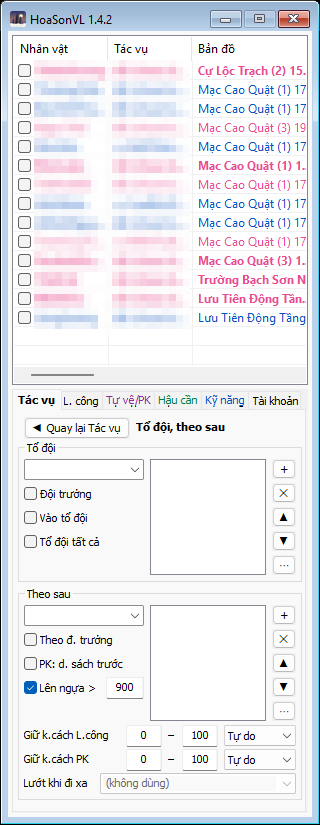
Tác vụ › Tổ đội, theo sau.
Đặt ai vào đội ai, ai đi theo ai. Hai danh sách tên: gõ tên hoặc chọn từ hộp thả xuống (hộp liệt kê nhân vật trong bot và người đang ở quanh), bấm + để thêm vào sau dòng đang chọn; ✕ xoá, ▲ ▼ đổi thứ tự. Bỏ tick một tên là tạm bỏ qua người đó, tên vẫn giữ trong danh sách. Nút ⋯ lưu danh sách ra tệp để nhân vật khác nạp lại, nạp từ tệp hoặc xoá hết.
Khung Tổ đội
Danh sách là thứ tự ưu tiên: người ở trên là đội trưởng được ưu tiên. Chỉ ai có tên ở đây mới được mời hoặc nhận vào đội.
Đội trưởngTự lập đội và mời các tên trong danh sách khi thấy họ. Nếu thấy một người đứng trên mình trong danh sách đang dẫn đội thì rời đội mình, xin vào đội họ.Vào tổ độiNhận lời mời hoặc tự xin vào đội của đội trưởng đầu tiên trong danh sách; đang ở đội khác thì rời để vào.Tổ đội tất cảLà đội trưởng: mời mọi người chơi thấy được. Không phải đội trưởng: vào đội bất kỳ ai gần nhất. Dùng khi đi sự kiện với người lạ.
Khung Theo sau
Danh sáchTheo người đầu tiên trong danh sách đang có mặt. Thứ tự tính từ trên xuống tới tên mình; đứng đầu danh sách nghĩa là không theo ai. Tick Luyện công: chỉ theo người cùng bản đồ trong tầm nhìn; khuất thì chỉ theo khi người đó là nhân vật trong bot cũng đang luyện công; người ở bản đồ khác thì ở lại bãi. Auto PK hoặc chỉ theo sau (không tick Luyện công): theo cả sang bản đồ khác, tới chỗ bot biết nhân vật trong bot đang đứng.Theo đ. trưởngƯu tiên đi theo đội trưởng của tổ đội trước, rồi mới tới danh sách.PK: d. sách trướcKhi Auto PK thì theo danh sách trước, đội trưởng sau (luyện công vẫn theo đội trưởng trước).Lên ngựa >Mọi quãng đi xa hơn số này (đi lộ trình, về bãi, theo sau, tới tiệm) thì lên ngựa trước. 900 là vừa.Giữ k.cách L.công / PKKhông đứng gần hơn số đầu, không để xa hơn số sau so với người được theo. Ô bên cạnh chọn đứng phía nào của người đó (Trước, Sau, Trái, Phải…) để nhiều nhân vật theo sau không dồn một chỗ bị đánh chùm; "Trước" là hướng người đó đang đánh. Tự do: chỉ giữ khoảng cách.Lướt khi đi xaThiên Vương: dùng Đoạn Hồn Thích để lướt khi đi xa ngoài thành. Phái khác ô bị khóa.
"Đội trưởng" trong mọi thiết lập nghĩa là: trong tổ đội thì là đội trưởng của đội; không có tổ đội thì là người mình đang theo sau. Nhân vật đang làm nhiệm vụ (Môn phái, Hằng ngày, Mặc Thạch) không theo sau ai và không được tính là đội trưởng để theo. Nhân vật đang Luyện công Tân thủ ở trong đội mà đội trưởng là nhân vật trong bot thì tự theo sau đội trưởng đó (như tick Tự theo sau và Theo đ. trưởng), không cần đặt gì ở trang này.
Trang con: Thưởng, tiện ích
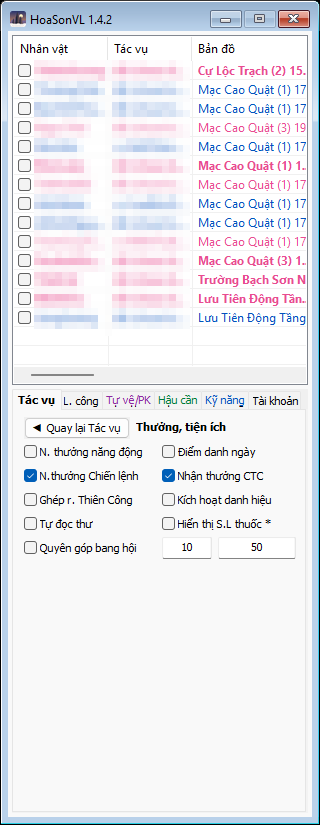
Tác vụ › Thưởng, tiện ích.
Các việc nhỏ bot làm xen kẽ, không cần xếp thứ tự.
N. thưởng năng độngNhận thưởng ở các mốc 10 / 25 / 55 / 80 điểm năng động.Điểm danh ngàyĐiểm danh mỗi ngày và nhận kinh nghiệm ngoại tuyến.N.thưởng Chiến lệnhNhận các mốc cấp chiến đã đạt (hàng miễn phí) và nhiệm vụ ngày / tuần đã xong. Cùng một ô với "Nhận thưởng Chiến lệnh" trong hộp của tác vụ Chiến lệnh. Ngoài mùa Chiến Lệnh thì bỏ qua.Nhận thưởng CTCSau Công Thành Chiến, nhân vật đã vào trận hôm nay thì tới Sứ Giả Thành Chiến đúng phe nhận Túi Càn Khôn. Game nói chưa có thưởng thì 10 phút sau thử lại, tối đa 4 lần. Chạy cả khi bật Auto PK.Ghép r. Thiên CôngĐủ 5 Thiên Công Lệnh thì khi gặp Lễ Quan (lúc nhận thẻ tháng hoặc về thành) ghép thành rương. Không tự đi riêng tới Lễ Quan.Kích hoạt danh hiệuGame hay tự bỏ danh hiệu khi đổi bản đồ. Bật ô này rồi chọn danh hiệu một lần trong game; bot nhớ và kích hoạt lại mỗi khi vào game hay sang bản đồ mới.Tự đọc thưCó thư mới, hoặc thư đã đọc mà chưa nhận đồ đính kèm, và đang ở khu an toàn: mở hộp thư từ xa, đọc, nhận đồ đính kèm; nhận từ xa không được thì tới Tín Sứ ở thành gần nhất. Không chen ngang việc đang làm.Hiển thị S.L thuốcHiện số lượng thuốc (chưa làm trong bản này).Quyên góp bang hộiỞ khu an toàn, túi có từ số ô thứ hai (vạn lượng) trở lên thì góp vào quỹ bang phần vượt số ô thứ nhất. Chạy trước "Gửi tiền" của Hậu cần. Ba lần không góp được thì thôi hôm nay.
Tab L. công
Đánh quái ở đâu, đánh thế nào, và khi nào thì về thành.
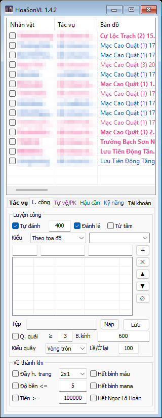
Tab L. công.
Khung Luyện công
Tự đánh + sốĐánh quái trong phạm vi này tính từ lộ trình. Kiểu Tự do (cả bản đồ): không giới hạn, đánh mọi quái thấy quanh nhân vật (số này chỉ dùng cho lộ trình). Bỏ tick: chỉ đi theo toạ độ hoặc theo sau, không đánh. 400 là tầm bình thường.Đánh lẻTick: tự đánh một mình theo lộ trình. Bỏ tick: đi theo lộ trình để tìm đội trưởng / người theo sau, vào được đội rồi mới đánh (xem trang Tổ đội).Từ tâmĐi tới tâm từng điểm lộ trình, dọc đường không đánh (trừ khi bị quái chặn quá 2 giây), tới nơi đánh hết quái quanh điểm rồi sang điểm kế. Hợp bãi có quái tụ thành cụm.KiểuTheo tọa độ: đánh quanh các điểm lộ trình bên dưới. Tự do (cả bản đồ): không cần lộ trình, đánh quái quanh mình, hết quái thì lên ngựa chạy chỗ khác trong bản đồ, tránh cổng. Ô bên cạnh là bản đồ luyện công tự do: gõ để tìm; chọn Tự do khi đang đứng ở bãi thì tự lấy bản đồ hiện tại.
Lộ trình (danh sách toạ độ)
Ba ô trên danh sách là bản đồ, x, y. Chúng tự đổi theo chỗ nhân vật đang đứng; gõ vào để nhập tay. Bấm + để thêm điểm sau điểm đang chọn. Cách làm lộ trình nhanh nhất: dắt nhân vật đi qua bãi, mỗi chỗ muốn dừng bấm + một lần.
✕ ▲ ▼ ∅Xoá điểm chọn, dời lên / xuống, xoá hết (để làm lộ trình bản đồ mới).Tệp, Nạp, LưuLộ trình đang dùng lấy từ tệp nào. Ô này chỉ hiện tên tệp; đưa chuột lên để xem đường dẫn đầy đủ. Nạp: chọn tệp và nạp luôn cho các nhân vật đang chọn (dùng chung một lộ trình cho cả nhóm). Lưu: luôn hỏi tên tệp (gợi sẵn tệp đang dùng) rồi mới ghi; chữ Lưu đỏ nghĩa là đã sửa mà chưa ghi.
Quây quái
Q. quái ≥ số, B.kínhKhi có đủ số quái trong phạm vi, chạy vòng xoắn ốc từ bán kính ngoài vào điểm lộ trình gần nhất để quái đuổi theo, gom lại một chỗ rồi mới đánh. Hợp môn phái đánh diện rộng. Ít quái quá thì quây mất thời gian, nên đặt tối thiểu 3.Kiểu quâyVòng tròn: vòng cố định theo B.kính. Bao quái: chạy vòng quanh đúng chỗ quái đang đứng, cách con ngoài cùng một khoảng Lề. Cùng / Trước: không đánh, chỉ chạy vòng quanh đội trưởng (Cùng) hoặc chạy vòng ở điểm lộ trình kế tiếp trước đội trưởng (Trước), đội trưởng tới nơi đứng đủ số giây Ở lại thì sang điểm sau. Đánh cùng / Đánh trước: như trên nhưng có đánh. Dùng khi một nhân vật kéo quái cho nhân vật khác (thường là nhân vật buff).
Khung Về thành khi
Gặp một trong các điều kiện tick thì dùng Thổ địa phù (không có thì Hồi Thành Phù) về thành, làm Hậu cần rồi quay lại bãi.
Đầy h. trang + cỡKhông còn chỗ trống cho món cỡ này (ngang × dọc ô). 2x1 là chặt nhất.Độ bền <=Một món đang mặc còn độ bền bằng hoặc dưới mức này.Tiền >=Ngân lượng mang theo lên tới mức này thì về gửi rương, tránh chết mất tiền.Hết bình máu / mana / Ngọc Lộ HoànHết loại đó trong túi và thanh phím tắt. Ngọc Lộ Hoàn chỉ tính những loại có trong danh sách Mua thuốc / Mua tạp hóa, đếm trong túi đạo cụ. Hai danh sách không có loại nào thì phải hết mọi loại mới về.
Tab Tự vệ/PK
Gặp người đánh mình thì làm gì, cừu sát và đồ sát ai, vài ô cho lúc PK.
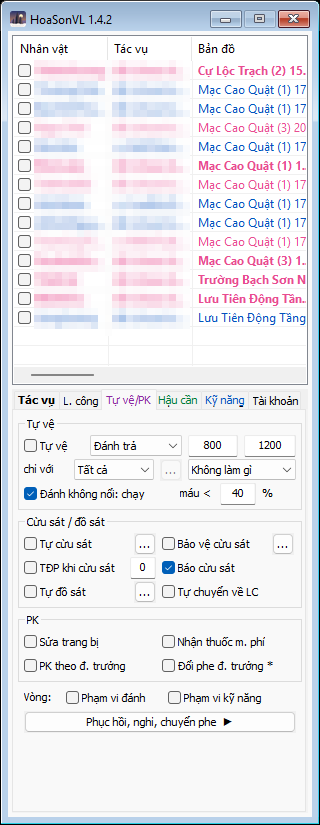
Tab Tự vệ/PK.
Khung Tự vệ
Đang luyện công mà có người chơi là kẻ địch (khác màu, hoặc đang cừu sát mình) đi vào phạm vi ô số thứ nhất, dù chưa đánh mình, thì làm theo kiểu đã chọn.
Kiểu tự vệThổ địa phù: về thành ngay; ở nơi không dùng được phù (như trên thuyền Phong Lăng Độ) thì bỏ chạy, bị vây thì đánh trả. Chuyển phe: mình là đội trưởng, địch đủ đông (xem Phục hồi › Chỉ chuyển phe khi số lượng), giao chức đội trưởng cho thành viên cùng màu với địch. Đánh trả: đánh kẻ địch gần nhất trong phạm vi ô số thứ hai tính từ lộ trình; nó chạy xa hơn thì quay lại luyện công. Bỏ chạy: chạy tới chỗ trống cách mọi địch đủ xa, tránh tường và ngõ cụt; bị vây không còn đường thì phù về thành ngay (không có phù thì đánh trả); hết địch thì luyện tiếp.Hai sốSố đầu: phạm vi phát hiện kẻ địch (nên nhỏ hơn tầm kỹ năng). Số sau: chỉ đánh / đuổi địch trong phạm vi này tính từ lộ trình luyện công (kiểu Tự do: từ chỗ gặp địch) và từ chỗ bắt đầu đuổi, ra ngoài thì buông và về lộ trình.chỉ vớiKiểu tự vệ trên chỉ áp dụng với kẻ địch thuộc loại này: Tất cả, hoặc Môn phái / Hệ / Người chơi có trong danh sách ở nút "…" (trống nghĩa là mọi người). Ô cuối: với địch không khớp danh sách thì làm kiểu nào khác, hoặc Không làm gì. Mỗi kiểu tự vệ nhớ loại và danh sách riêng.Đánh không nổi: chạy, máu <Chọn Đánh trả mà máu tụt dưới số này (%), hoặc hết bình máu, thì bỏ chạy như kiểu Bỏ chạy (đi bộ thì kèm Khinh công ngược hướng địch). Máu hồi lên và còn bình thì đánh trả lại. Máu xuống dưới ngưỡng TĐP ở trang Phục hồi thì vẫn phù về thành như cũ.
Người có tên trong danh sách Tự cừu sát luôn được đánh trả, dù "chỉ với" chọn cách khác.
Khung Cừu sát / đồ sát
Tự cừu sátĐang luyện công ở khu chiến đấu (không tính bản đồ sự kiện), thấy người có tên trong danh sách "…" thì cừu sát người đó (người gần nhất trước) rồi đánh như kẻ địch. Game không nhận thì 2 giây sau thử lại.Bảo vệ cừu sátNhân vật trong danh sách (nhân vật khác của bot) đang bị ai đó cừu sát thì mình cừu sát người đó luôn, để cả nhóm cùng đánh. Các nhân vật ghi tên nhau thì bảo vệ qua lại.TĐP khi cừu sát + sốBị người khác cừu sát mà điểm PK của mình từ số này trở lên thì phù về thành. 0 là luôn về.Báo cừu sátVào thế cừu sát thì bot ghi một dòng "Cừu sát với " ở kênh chat Khác để bạn thấy.Tự đồ sátỞ khu chiến đấu, gặp người trong danh sách, khác màu, thì chuyển chế độ PK sang Đồ sát và đánh người đó trước. Trong tổ đội, các nhân vật khác của bot cũng có tên người đó thì chờ nhau tới (tối đa 10 giây) rồi mới chuyển cùng lúc.Tự chuyển về LCKhông còn ai trong danh sách đồ sát quanh mình thì chuyển chế độ PK về luyện công, từng bậc như game cho phép (ở khu chiến đấu game bắt chờ 3 phút).
Khung PK
Sửa trang bịKhi Auto PK ngoài bãi: sửa từ xa khi độ bền xuống dưới mức "Sửa trên bãi" của Hậu cần.Nhận thuốc m. phíỞ chiến trường Tống Kim, thuốc dưới mức tối thiểu của danh sách Mua thuốc và đang ở hậu doanh thì nhận Hành Quân Đơn miễn phí ở Quân Nhu Quan trước khi mua.PK theo đ. trưởngĐội trưởng đổi chế độ PK (Luyện công / Chiến đấu / Đồ sát) thì mình đổi theo.Đổi phe đ. trưởngĐổi phe theo đội trưởng (chưa làm trong bản này).Vòng: Phạm vi đánh / Phạm vi kỹ năngVẽ lên màn hình game một vòng cam (phạm vi đánh của tác vụ đang làm) và vòng xanh (tầm kỹ năng đang dùng). Bật khi đang chỉnh số phạm vi để nhìn cho dễ, chỉnh xong tắt.
Trang con: Phục hồi, nghỉ, chuyển phe
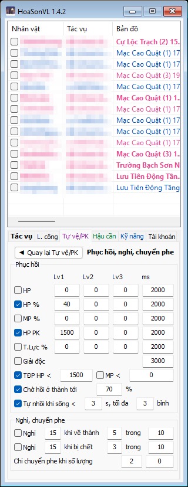
Tự vệ/PK › Phục hồi, nghỉ, chuyển phe.
Khung Phục hồi
Mỗi dòng là một điều kiện uống thuốc. Ba cột Lv1 / Lv2 / Lv3 là ba mức: máu tụt dưới mức nào thì uống bình của mức đó. Lv1 dùng loại bình hồi ít nhất trong túi, Lv3 dùng loại hồi nhiều nhất. Riêng bình máu: bỏ tick "Tự nhồi khi sống <" thì Lv1 cũng dùng bình to nhất (có tick thì bình to để dành cho lúc nhồi). Ghi 0 là tắt mức đó. Cột ms: cách tối thiểu giữa hai lần uống của dòng đó (mili giây).
HP, HP %Số máu hoặc phần trăm máu dưới mức thì uống bình máu. Thường chỉ cần HP %.MP %Phần trăm nội lực dưới mức thì uống bình nội lực.HP PKSố máu dưới mức thì uống, dùng khi đang đánh người chơi thay cho hai dòng HP trên (PK mất máu nhanh nên để mức cao hơn).T.Lực %Thể lực dưới mức thì uống bình thể lực (Tam Hoa Tán…).Giải độcTrúng độc thì dùng bình giải độc mạnh nhất trong túi.TĐP HP < / MP <Máu hoặc nội lực tụt dưới mức này thì dùng Thổ địa phù về thành. Đây là phao cứu sinh cuối cùng, nên bật.Chờ hồi ở thành tới … %Về thành mà máu dưới mức này thì xuống ngựa ngồi hồi tới đủ rồi mới đi tiếp. Bỏ tick: đi ngay.Tự nhồi khi sống < … s, tối đa … bìnhMáu tụt nhanh tới mức chỉ còn sống được dưới số giây này thì uống cùng lúc nhiều bình to nhất, vừa đủ bù, không quá số bình đặt. Cứu nhân vật khi bị đánh dồn.
Khung Nghỉ, chuyển phe
Nghỉ … khi về thành … trong …Về thành đủ số lần trong khoảng phút đó thì bot nghỉ chừng ấy phút (vẫn uống thuốc) rồi làm tiếp. Dấu hiệu bãi đang có người phá.Nghỉ … khi bị chết … trong …Như trên nhưng đếm số lần chết.Chỉ chuyển phe khi số lượngTự vệ kiểu Chuyển phe chỉ làm khi số kẻ địch cùng một phe từ số đầu trở lên, và chỉ đếm địch có cấp từ số sau (0 là mọi cấp).
Tab Hậu cần
Mỗi lần về thành bot làm một lượt "hậu cần": mua thuốc, bán, cất đồ, sửa đồ, gửi tiền. Tab này đặt lượt đó làm gì.
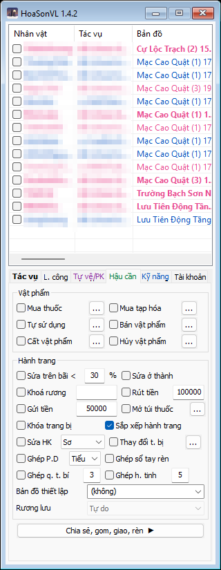
Tab Hậu cần.
Khung Vật phẩm
Sáu danh sách, mỗi danh sách một ô tick (bật) và nút "…" mở cửa sổ riêng để thêm món (xem mục kế tiếp). Số trên nút là số món trong danh sách.
Mua thuốcỞ thành, trong túi ít hơn Min thì mua ở tiệm thuốc cho đủ Max.Mua tạp hóaNhư trên ở tiệm tạp hoá (Thổ địa phù, Hồi Thành Phù…).Tự sử dụngTự dùng các món này khi có trong túi (Tiên Thảo Lộ, Thiên Sơn Ngọc Lộ, Ngọc Lộ Hoàn…). Món có hiệu ứng thì chờ hết hiệu ứng mới dùng lại; món lạ thì 15 giây một lần.Bán vật phẩmỞ thành, bán ở tiệm gần nhất các món không khóa có tên chứa chữ đã ghi.Cất vật phẩmỞ thành, tới rương gần nhất cất các món có tên chứa chữ đã ghi vào rương đã chọn. Cất thì không bán.Hủy vật phẩmĐồ khóa không bán được: đem tới Quản Sự Nha Phủ ở thôn / trấn để game thu hồi. Chỉ món khóa trong túi đạo cụ đúng tên và cấp.
Khung Hành trang
Sửa trên bãi < … %Đang luyện công mà một món còn dưới mức này thì sửa từ xa ngay tại bãi, trả bằng tiền mang theo.Sửa ở thànhMỗi lần vào thành, có món mòn quá 5 % thì sửa.Khoá rương + mật khẩuRương có mật khẩu thì ghi vào để bot mở trước khi chuyển đồ, xong khoá lại.Rút tiền + sốLượt hậu cần có món cần mua thì rút từ rương cho túi có sẵn số này. Đang mua / sửa mà thiếu thì rút bù dù có tick hay không.Gửi tiền + sốLúc rảnh ở khu an toàn, túi giữ đúng số này: thừa gửi rương, thiếu rút ra. Chết ngoài bãi không mất tiền trong rương, nên nên bật.Mở túi thuốcCòn ít bình thì mở túi thuốc (Cẩm Nang Xích Hà Đơn…) lấy bình ra. Nút "…" đặt luật: mở khi nào, kích hoạt ở số bình nào, lấy ít nhất bao nhiêu, giữ lại bao nhiêu ô trống (xem ảnh ở dưới). Có thể mở ngay bằng Ctrl+X (không chờ). Tự mở ở khu chiến đấu thì bot chờ tới khi trong khoảng 700 quanh mình không còn quái và người chơi địch, vì bị đánh là mở hỏng.Khóa trang bịTrang bị đang mặc không bị vứt, không bị rã, cả khi bạn tháo ra bỏ vào túi trong lúc bot chạy. Nên bật.Sắp xếp hành trangDồn ô trống trong túi đạo cụ thành khối 2–3 ô liền nhau khi game báo thiếu chỗ (nhận thưởng, giao nộp cần chỗ như vậy). Lúc luyện công trên bãi cũng tự xếp xen giữa các đòn, khi túi đổi mà khối ô trống liền nhau còn dưới 8 ô (phù về thành thì dừng). Ở thành chỉ xếp khi game báo thiếu chỗ. Không chạy khi Auto PK.Sửa HK + kiểuSửa cả đồ Hoàng Kim / Bạch Kim khi sửa đồ. Sơ: rẻ nhưng giảm độ bền tối đa. Kỹ: gấp 3 tiền, giữ nguyên độ bền tối đa. + TT: dùng thêm Thủy Tinh để bù độ bền tối đa đã mất. Không tick: bot để yên đồ HK.Thay đổi t. bịMặc bộ PvP khi Auto PK / Liên đấu, bộ Luyện công khi làm việc khác, theo hai danh sách ở nút "…" (ảnh ở dưới). Món trong hai danh sách không bao giờ bị bán, rã, cất, hủy hay giao đi.Ghép P.DỞ khu an toàn: 10 Phúc Duyên Lộ (Tiểu) ghép thành 1 (Trung); chọn Trung thì ghép thêm 5 Trung thành 1 Đại.Ghép sổ tay rènCó từ 2000 Mảnh Trang Bị thì đổi lấy Sổ Tay Rèn. Tick cả Rèn thì việc nào chạy trước lấy mảnh trước.Ghép q. t. bí + cấpGhép 6 Quà Thần Bí cùng cấp lên một cấp, từ thấp lên tới cấp đã ghi. Cần Cuộn Sách Luân Hồi Tăng Cấp (thiếu thì mua tạp hoá).Ghép h. tinh + cấpTrong thành: ghép 3 Khoáng Thạch Huyền Tinh cùng cấp lên một cấp, tới cấp đã ghi. Khoá ghép với khoá, không khoá với không khoá. Thất bại mất một viên.Bản đồ thiết lậpThôn / trấn / thành mà Thổ địa phù đưa về (phù đưa về rương chạm lần cuối). Lỡ vào thành khác thì bot về đây làm hậu cần và chạm rương ở đây. Để (không): bot tự lấy thành / thôn có rương gần bãi luyện công.Rương lưuChỉ bật khi Bản đồ thiết lập là một trong 7 thành: chọn rương bot chạm để lưu điểm Thổ địa phù trước khi ra bãi. Lượt hậu cần ở thành đó cũng đi thẳng tới rương này để cất đồ. Tự do: rương nào cũng được (rương gần chỗ Xa Phu / phù vừa đưa tới). Đông / Tây / Nam / Bắc / Trung Tâm: rương gần điểm cùng tên của Thần Hành Phù (Thành Đô Đông…). Mỗi thành chỉ hiện những hướng nó có: Lâm An không có Tây, Đại Lý chỉ có Bắc và Trung Tâm, Biện Kinh Đông và Nam là một chỗ. Thôn / trấn: ô này tắt, bot dùng rương gần nhất. NV Mặc Thạch vẫn lưu rương gần Mặc Thạch.
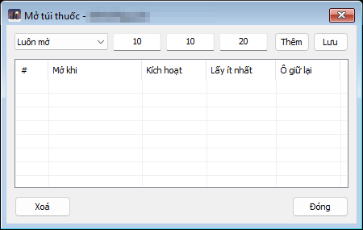
Mở túi thuốc: mỗi dòng là Mở khi · Kích hoạt (còn bao nhiêu bình thì mở) · Lấy ít nhất · Ô giữ lại. Chưa có dòng nào thì bot dùng Luôn mở, 10, 10, 20.
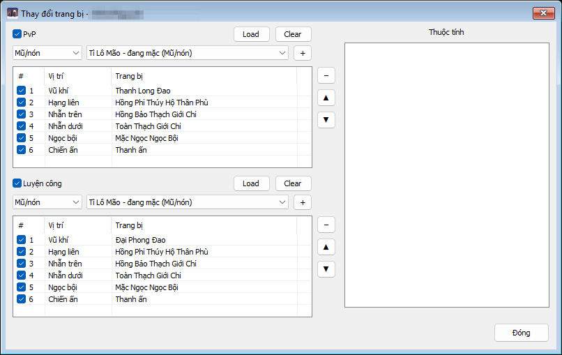
Thay đổi trang bị. Mỗi bộ: chọn vị trí ở ô trái, chọn món ở ô phải (liệt kê món đang mặc, trong túi, túi hành trang, rương), bấm +. Load: lấy nguyên bộ đang mặc. Khung Thuộc tính bên phải hiện thuộc tính món đang chọn.
Các cửa sổ danh sách (nút "…")
Tám danh sách dùng chung một kiểu cửa sổ: bảng ở trên, ô nhập ở dưới. Gõ hoặc chọn tên món ở ô thả xuống (hộp liệt kê món đang có trong túi và tên quen thuộc), điền số, bấm Thêm. Chọn một dòng rồi sửa số và bấm Lưu. Tick ở đầu dòng là dòng đó đang dùng. Cột Hoạt động: món chỉ áp dụng khi đang làm việc đó (Luyện công, Auto PK, Làm nhiệm vụ, Liên đấu, Phong Lăng Độ, Trường Ca, Cấm Địa Phái…) hoặc Không giới hạn. Nút ⋯ lưu / nạp danh sách ra tệp.
Mua thuốc, Mua tạp hóa
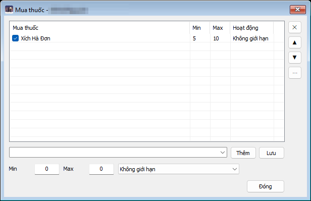
Min / Max: trong túi ít hơn Min thì mua cho đủ Max. Ví dụ Xích Hà Đơn 5 / 10: còn 4 bình thì về thành mua lên 10.
Tự sử dụng
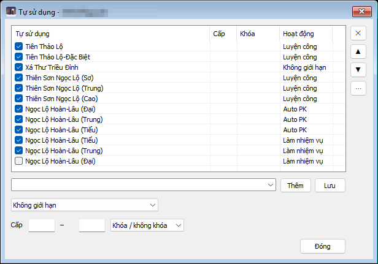
Thêm Cấp (khoảng cấp của món) và Khóa (chỉ dùng món khóa / không khóa / cả hai). Một món có thể ghi nhiều dòng với hoạt động khác nhau, như Ngọc Lộ Hoàn (Đại) chỉ khi Auto PK.
Bán vật phẩm
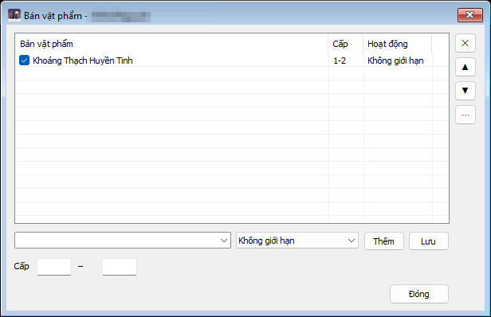
Tên và khoảng cấp. "Khoáng Thạch Huyền Tinh 1–2" là bán huyền tinh cấp 1 và 2, giữ cấp cao hơn.
Cất vật phẩm
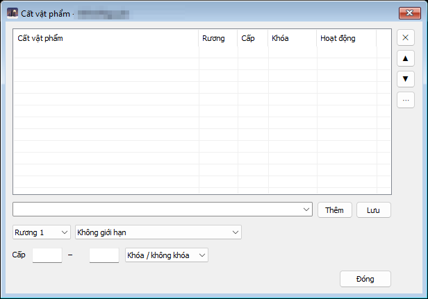
Thêm ô chọn Rương (rương chính, 1, 2, 3). Rương chưa thuê thì bỏ qua.
Hủy vật phẩm
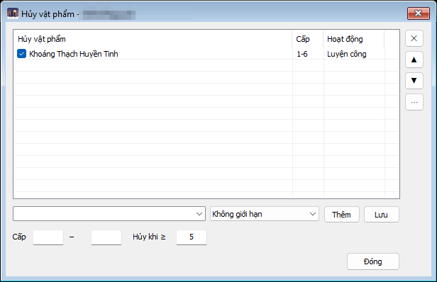
Hủy khi ≥: có từ chừng này món khớp danh sách mới đi hủy, để không chạy tới nha phủ vì một món.
Giao / Gom vật phẩm
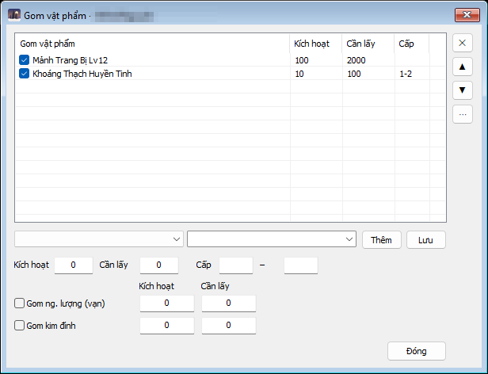
Dùng cặp: nhân vật A bật Giao, nhân vật B bật Gom (ở trang Chia sẻ, gom, giao, rèn). Món có trong cả hai danh sách thì A đem giao cho B. Bên Gom: Kích hoạt là còn ít hơn số này mới gom, Cần lấy là lấy bao nhiêu một lần. Bên Giao: Kích hoạt là có đủ số này mới đi giao, Giữ lại là chừa lại bao nhiêu. Hai ô dưới làm tương tự cho ngân lượng (vạn) và kim đỉnh.
Trang con: Chia sẻ, gom, giao, rèn
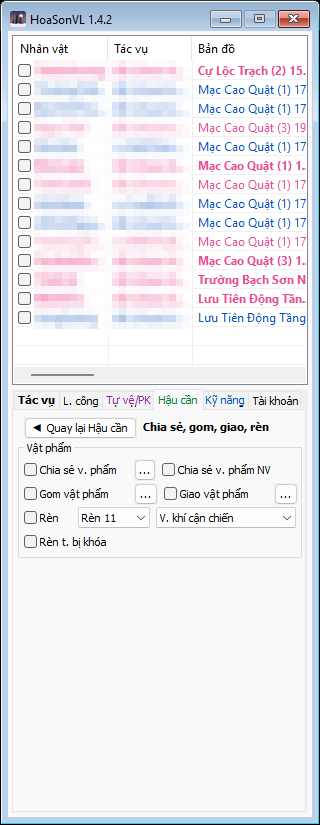
Hậu cần › Chia sẻ, gom, giao, rèn.
Việc giữa các nhân vật của cùng một bot (cùng được tick, cùng máy chủ game).
Chia sẻ v. phẩmNhân vật đi làm nhiệm vụ phải ra bản đồ xa mà thiếu Thần Hành Phù / Tiêu Dao Phù / Hồi Thành Phù (tick loại nào trong nút "…") thì xin từ nhân vật đang luyện công có món đó. Hai bên về thành, giao, rồi quay lại việc cũ.Chia sẻ v. phẩm NVNhiệm vụ Mặc Thạch / Hằng ngày đòi trang bị mà nhân vật này chưa có thì xin nhân vật khác đã nhặt được nhờ luật lọc "Trang bị nhiệm vụ".Gom vật phẩm / Giao vật phẩmBật ở bên nhận và bên cho, danh sách ở nút "…" (xem mục trên). Dùng để gom Mảnh Trang Bị, huyền tinh, tiền về một nhân vật.Rèn + Rèn 11 / 12 + loạiMỗi khi về thành: rèn trang bị loại đã chọn bằng Mảnh Trang Bị, lần này tới lần khác tới khi hết mảnh (tối đa 3600 lượng một lần, thiếu rút rương). Rèn 12 cần Cấp Rèn 10.Rèn t. bị khóaDùng cả mảnh khóa (dùng trước, hết mới tới mảnh thường).
Tab Kỹ năng
Bot ra chiêu gì, theo thứ tự nào, và buff gì lên mình.
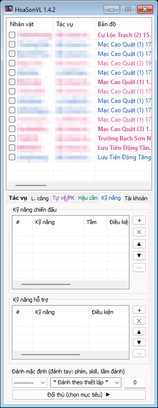
Tab Kỹ năng.
Kỹ năng chiến đấu
Danh sách có thứ tự. Mỗi lần ra chiêu, bot lấy dòng đầu tiên đủ điều kiện (đã hồi chiêu, đúng vũ khí, đúng tác vụ). Nên để chiêu mạnh ở trên, chiêu cơ bản ở cuối làm dự phòng. Bấm + để thêm, bấm đúp hoặc chuột phải một dòng để sửa, ⋯ để lưu danh sách ra tệp cho nhân vật khác cùng phái nạp.
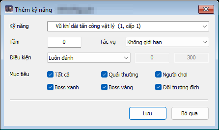
Hộp thêm / sửa một dòng kỹ năng chiến đấu.
Kỹ năngChọn trong các kỹ năng nhân vật đã học (tên và cấp đọc từ game).TầmKhoảng cách ra chiêu. 0 là lấy tầm mặc định của kỹ năng.Tác vụChỉ dùng dòng này khi đang làm việc đó: Luyện công, Auto PK, Làm nhiệm vụ… hoặc Không giới hạn.Điều kiện + hai sốLuôn đánh, hoặc chỉ khi số quái quanh mục tiêu từ bao nhiêu, máu mục tiêu trên / dưới bao nhiêu, mình còn bao nhiêu nội lực… Hai ô số là mức và bán kính kèm theo điều kiện.Mục tiêuDòng này được đánh lên ai: quái thường, người chơi, boss xanh, boss vàng, đội trưởng địch, hoặc Tất cả.
Kỹ năng hỗ trợ
Buff tự dùng lên mình (hoặc đồng đội), theo thứ tự từ trên xuống. Thường là chiêu tăng công / thủ có thời hạn.
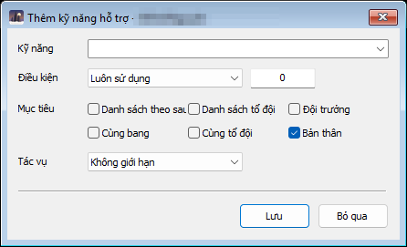
Hộp thêm / sửa một dòng kỹ năng hỗ trợ.
Điều kiện + sốLuôn sử dụng: dùng lại khi hiệu ứng không còn trên người (hào quang: luôn bật). Giãn cách (ms): mỗi chừng ấy mili giây. Sinh lực (%) <: khi máu dưới mức. Có nhiều dòng hào quang thì bot luân phiên để hưởng được nhiều vòng.Mục tiêuBản thân, Cùng tổ đội, Cùng bang, Đội trưởng, Danh sách theo sau, Danh sách tổ đội. Chọn nhiều thì buff lần lượt cho những người đó khi họ ở trong tầm.
Đánh mặc định (đánh tay)
Cho lúc bạn tự cầm chuột. Chọn một phím (Space hoặc A–Z): nhân vật đang tick và cửa sổ game đang ở trên cùng, nhấn phím đó là ra kỹ năng bên cạnh về hướng con trỏ chuột, như phím kỹ năng của game nhưng ra sớm hơn, kể cả khi đối thủ còn ngoài tầm. Phím này không còn vào game nữa (chọn phím bạn không dùng để chat). * Đánh theo thiết lập * là lấy dòng đầu tiên đủ điều kiện ở danh sách trên. Ô số là tầm; 0 là tầm của kỹ năng.
Trang con: Đối thủ (chọn mục tiêu)
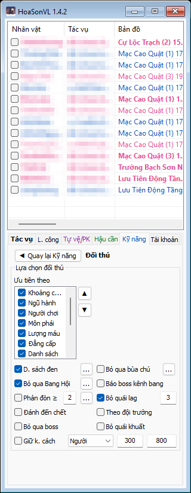
Kỹ năng › Đối thủ.
Ai được đánh và ai đánh trước, dùng cho mọi việc có đánh (luyện công, Auto PK).
Ưu tiên theo
Danh sách bên trái: so lần lượt từ trên xuống, ai hơn ở mục trên thì đánh trước. Tick mục nào dùng mục đó, ▲ ▼ đổi thứ tự.
Khoảng cách: gần trước (tính theo từng bậc, nên hai mục tiêu gần như nhau thì xét mục dưới).
Người chơi: thấy người chơi là đánh trước quái. Môn phái / Ngũ hành: theo thứ tự môn phái / hệ hiện ở ô bên phải.
Lượng máu: ít máu trước. Đẳng cấp: cấp thấp trước. Boss: boss trước. Đội trưởng: mục tiêu đội trưởng đang đánh trước.
Danh sách / Danh hiệu / Bùa chú: tên trong danh sách ưu tiên, người mang danh hiệu trong danh sách, hoặc đang dính bùa trong danh sách thì đánh trước. Chọn mục đó, danh sách hiện ở ô bên phải, "…" để thêm bớt.
Bỏ qua và giới hạn
D. sách đenKhông đánh NPC / quái / người có tên trong danh sách. Dùng để tránh lính gác thành, Cửa Thành, NPC sự kiện.Bỏ qua bùa chúKhông đánh ai đang dính các bùa trong danh sách (ví dụ đang vô địch).Bỏ qua Bang HộiKhông đánh người cùng bang và người của các bang trong danh sách (nút "…" chọn từ các bang đang ở quanh). Cũng bật / tắt bằng Ctrl+B.Báo boss kênh bangBoss 90 lúc 19:30 và 21:30: gom đủ toạ độ boss ở bản đồ 9x thì nhắn một lần vào kênh bang.Phản đòn ≥ … %Bot tự học quái phản đòn: đánh trúng mà máu mình mất ngay từ số % này gần như mỗi đòn thì ghi tên quái vào danh sách và không đánh nữa.Bỏ quái lag … giâyĐánh mãi một con không mất máu quá số giây này (bị tường chặn, lag) thì bỏ, 15 giây sau xét lại.Đánh đến chếtĐã chọn ai thì đánh tới chết, không đổi sang mục tiêu gần / ưu tiên hơn.Theo đội trưởngĐánh cùng mục tiêu với đội trưởng (không ở trong tổ đội: người mình đang theo sau).Bỏ qua boss / Bỏ quái khuấtKhông đánh boss (tên xanh / vàng); không đánh quái bị vật cản che.Giữ k. cách + loại + hai sốĐánh loại đối thủ này mà nó gần hơn số đầu hoặc xa hơn số sau thì ngừng đánh, lùi ra / lại gần tới giữa khoảng rồi mới đánh tiếp. Cho phái đánh xa giữ khoảng cách với boss hoặc người.
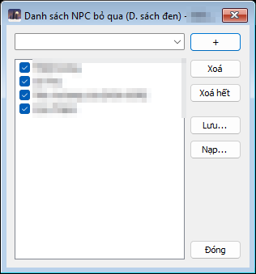
Cửa sổ danh sách tên, dùng chung cho mọi danh sách tên trong bot (đen, ưu tiên, cừu sát, bang…): gõ hoặc chọn tên quanh mình, bấm +, tick để dùng, Lưu / Nạp ra tệp.
Tab Tài khoản
Đăng nhập tự động, đường dẫn game, mang thiết lập sang máy khác.
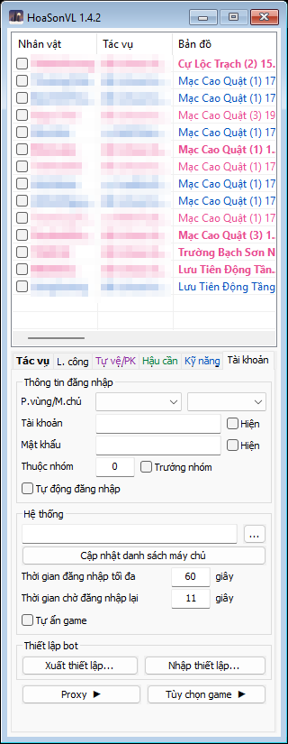
Tab Tài khoản.
Khung Thông tin đăng nhập
Của riêng nhân vật đang chọn, không bao giờ bị sao chép sang nhân vật khác.
P.vùng / M.chủPhân vùng và máy chủ. Danh sách lấy từ game bằng nút "Cập nhật danh sách máy chủ" bên dưới.Tài khoản, Mật khẩuTài khoản game của nhân vật này. Cả hai đều bị che, tick Hiện để xem. Mật khẩu được mã hoá theo tài khoản Windows đang dùng, máy khác không đọc được.Thuộc nhóm, Trưởng nhómChia nhân vật thành nhóm. Bấm phím tắt (như Ctrl+P) trong game của trưởng nhóm thì mọi nhân vật được tick trong nhóm cùng làm theo.Tự động đăng nhậpNhân vật được tick mà chưa mở game thì bot tự mở game theo đường dẫn và đăng nhập (nhiều nhân vật thì lần lượt từng người); bị văng ra màn hình đăng nhập thì tự vào lại. Game tự kết nối lại ("Tiến hành kết nối lại sau … giây") quá một phút mà chưa được thì bot cho rời trò chơi về màn hình đăng nhập rồi đăng nhập lại. Game kẹt ở "Kết nối máy chủ thất bại" quá 20 giây (hoặc quá 3 phút không thấy màn hình đăng nhập) thì bot tắt game đó và mở game mới. Thử 5 lần không vào được thì thôi: xem lại tài khoản, mật khẩu, máy chủ. Bỏ tick hoặc Hủy đăng nhập (chuột phải bảng nhân vật) là thôi.
Khung Hệ thống
Đường dẫn game + "…"Tệp gamecl.exe của nhân vật đang chọn, dùng khi tự đăng nhập. Nhân vật mới chưa đặt thì lấy của nhân vật ngay trên nó trong bảng.Cập nhật danh sách máy chủĐọc danh sách phân vùng / máy chủ từ thư mục game vào bot, dùng chung cho mọi nhân vật. Làm một lần sau khi đặt đường dẫn.Thời gian đăng nhập tối đaQuá chừng này giây chưa vào được game thì thử lại.Thời gian chờ đăng nhập lạiChờ chừng này giây sau mỗi lần mất kết nối / đăng nhập không được rồi mới đăng nhập lại; cũng là khoảng cách giữa hai nhân vật khi bot đăng nhập lần lượt. Game đi qua proxy: chờ ít nhất 60 giây.Tự ẩn gameVào game xong thì ẩn cửa sổ game. Bấm đúp tên trong bảng để hiện lại.
Khung Thiết lập bot
Xuất thiết lập…Gom thiết lập của mọi nhân vật vào một tệp khoá bằng mật khẩu để mang sang máy hoặc tài khoản Windows khác. Nên xuất định kỳ phòng cài lại Windows, vì thư mục config chỉ mở được trên đúng máy và tài khoản này.Nhập thiết lập…Đọc tệp đã xuất (cần đúng mật khẩu), thay thiết lập hiện có.
Trang con: Proxy
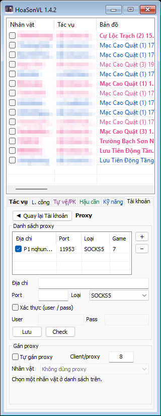
Tài khoản › Proxy.
Cho mỗi game đi internet qua một proxy riêng ngay bên trong game, không cần chương trình proxy ngoài. Proxy phải được gán trước khi đăng nhập; bot gửi proxy vào mọi game nó thấy ngay khi game mở. Proxy hỏng thì game mất kết nối chứ không bao giờ đi thẳng.
Danh sách proxyChung mọi nhân vật. Chọn một dòng để sửa ở khung dưới, + thêm mới, − xoá. Cột Game: số game đang đi qua proxy đó. Bỏ tick một dòng: Tự gán không chia proxy đó nữa.Địa chỉ, Port, LoạiMáy chủ proxy, cổng, SOCKS5 hoặc HTTP. Ô Địa chỉ dán được cả chuỗi dạng host:port:user:pass hoặc socks5://…, bot tự tách.Xác thực, User, PassProxy cần đăng nhập.Lưu, CheckLưu vào dòng đang chọn (không chọn thì thêm mới). Check: thử kết nối qua proxy, báo sống / chết và thời gian.Tự gán proxy, Client/proxyGame mới mở được gán vào proxy đang có ít game nhất, mỗi proxy tối đa chừng này game (0 là không giới hạn).Nhân vậtGán tay proxy cho nhân vật đang chọn ở bảng (chọn nhiều cũng được). Bị khoá khi Tự gán đang bật. Game đã đăng nhập thì có hiệu lực từ lần đăng nhập sau.
Trang con: Tùy chọn game
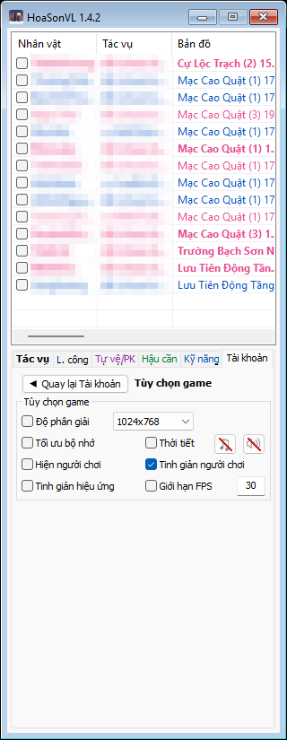
Tài khoản › Tùy chọn game.
Chỉnh cách game vẽ, cho nhân vật được tick, để chạy nhiều game nhẹ máy. Đây chỉ là hiển thị phía máy mình; bot vẫn thấy mọi người chơi.
Độ phân giảiĐặt cỡ cửa sổ game.Tối ưu bộ nhớCửa sổ game đang ẩn thì game không vẽ gì và trả bớt RAM. Hiện lại thì như thường. Nên bật khi chạy nhiều game.Thời tiết, ♫, 🔊Thời tiết, nhạc và âm thanh của game. Gạch đỏ là tắt. Mặc định tắt cả ba.Hiện người chơiVẽ người chơi khác. Tắt để nhẹ máy khi đông người; bot vẫn thấy họ.Tinh giản người chơi / hiệu ứngVẽ người và hiệu ứng kỹ năng đơn giản.Giới hạn FPSGame vẽ tối đa chừng này khung hình mỗi giây. 30 là đủ cho bot; không ảnh hưởng tốc độ đánh.
Nhặt vật phẩm & lọc đồ
Cửa sổ mở từ nút "…" cạnh "Nhặt v. phẩm" ở tab Tác vụ. Đây là chỗ quyết định nhặt gì và giữ lại trang bị nào. Sửa xong bấm Lưu (lưu rồi đóng); Bỏ qua là đóng mà không lưu.
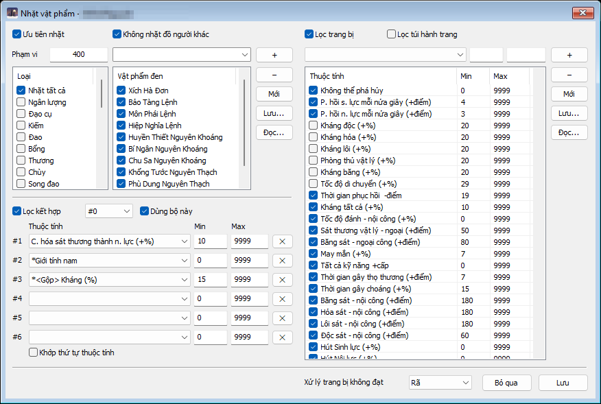
Nhặt vật phẩm. Bên trái: nhặt gì. Bên phải: trang bị nhặt được phải đạt thuộc tính gì mới giữ.
Nửa trái: nhặt gì
Ưu tiên nhặt, Phạm viNhặt trước khi đánh tiếp, trong phạm vi này quanh mình.LoạiTick loại đồ được nhặt: Nhặt tất cả, hoặc từng loại (ngân lượng, đạo cụ, kiếm, đao…).Vật phẩm đenTên món không nhặt dù thuộc loại được tick (Xích Hà Đơn rơi, lệnh bài không cần…). Thêm bằng ô trên và +, Mới / Lưu… / Đọc… để quản lý nhiều bộ.Không nhặt đồ người khácBỏ qua đồ còn thuộc quyền người khác.
Nửa phải: lọc trang bị
Tick Lọc trang bị để dùng bảng này. Áp dụng cho trang bị trong túi đạo cụ (và túi hành trang nếu tick Lọc túi hành trang), trừ đồ vừa tháo ra và đồ bot tự lấy ra. Mỗi dòng trong bảng là một thuộc tính với Min / Max; tick dòng nào thì trang bị có thuộc tính đó trong khoảng là đạt. Thêm thuộc tính bằng ô thả xuống phía trên và +. Không tick cả Lọc trang bị lẫn Lọc kết hợp thì mọi trang bị đều được giữ.
Lọc kết hợp #0…Bộ luật nhiều điều kiện cùng lúc: trang bị phải có đủ các thuộc tính #1, #2, #3… đồng thời mới đạt. Có thể làm nhiều bộ (#0, #1…), tick Dùng bộ này cho bộ đang chọn. Khớp thứ tự thuộc tính: các dòng phải đúng thứ tự trên món.Xử lý trang bị không đạtGiữ lại (để trong túi), Rã (lấy mảnh / huyền tinh) hoặc Vứt bỏ. Không bao giờ rã / vứt: đồ trong Thay đổi trang bị, đồ nhiệm vụ, đồ hiếm, đồ khoá, Hoàng Kim, ngựa, mặt nạ; đồ đã mặc khi bật Khóa trang bị (Hậu cần).
Ví dụ hay dùng: tick "Không thể phá hủy", "Sát thương vật lý ngoại công ≥ 50", "Tất cả kỹ năng +cấp ≥ 1" là ba điều kiện đơn; món có một trong ba là giữ. Lọc kết hợp #0 "Hóa sát thương thành nội lực ≥ 10 và Giới tính nam và Kháng ≥ 15" là món phải có cả ba.
Phím tắt trong game
Bấm ngay trong cửa sổ game của nhân vật được tick. Trên game của trưởng nhóm thì cả nhóm cùng làm (trừ vài phím ghi "chỉ nhân vật đó").
Phím
Tác dụng
Shift+F1
Hiện bảng phím tắt này trong khung chat của game.
Ctrl+P
Bật / tắt Auto PK.
Ctrl+F
Bật / tắt Tự đánh (Auto PK).
Ctrl+E
Bật / tắt Tự theo sau.
Ctrl+A
Bật / tắt Nhặt vật phẩm.
Ctrl+G
Chạy tới chỗ boss vừa được báo (khi Auto PK). Chỉ nhân vật đó; nhân vật theo sau tự đi theo.
Ctrl+D
Bật đồ sát; bấm lần nữa về chế độ PK.
Ctrl+N
Bật / tắt Bỏ quái thường.
Ctrl+O
Bật / tắt Bỏ qua boss.
Ctrl+W
Bật / tắt Không đuổi theo.
Ctrl+B
Bật / tắt Bỏ qua Bang Hội.
Ctrl+X
Mở túi thuốc máu ngay, ở mọi bản đồ.
Ctrl+R
Lưu rương gần nhất (khu phi chiến đấu). Trưởng nhóm: cả nhóm về cùng thành rồi lưu.
Ctrl+Z
Mở rương từ xa.
Ctrl+Space
Tạm dừng / chạy tiếp bot. Lúc tạm dừng nhân vật vẫn được tick, bot chỉ bơm máu, mana. Trên trưởng nhóm: chỉ nhân vật đó, không lan cả nhóm.
Ngữ cảnh sử dụng
Vài cách phối hợp các tab cho những việc hay gặp.
Treo luyện công qua đêm
L. công: làm lộ trình 4–6 điểm, Tự đánh 400, bật Về thành khi hết bình máu và đầy hành trang.
Hậu cần: Mua thuốc (bình máu 5/10, nội lực 5/10), Mua tạp hóa (Thổ địa phù 2/2), Sửa ở thành, Gửi tiền, Khóa trang bị. Bản đồ thiết lập là thành gần bãi; ở 7 thành chọn Rương lưu theo hướng gần đường ra bãi để Thổ địa phù đưa về đúng rương đó.
Phục hồi: HP % 40, TĐP HP < 1500, Tự nhồi 3 giây. Tự vệ: Thổ địa phù, hoặc Đánh trả với "Đánh không nổi: chạy".
Tác vụ: tick Luyện công. Tự vệ/PK › Phục hồi: bật Nghỉ … khi bị chết 3 lần trong 10 phút để không tốn phù khi bị phá.
Nhiều nhân vật làm nhiệm vụ mỗi ngày
Tác vụ: tick NV Môn phái, NV Hằng ngày, NV Mặc Thạch, Năng động, Nhận thưởng Thẻ tháng, Nhận buff Bang hội; để chúng trên Luyện công. Chuột phải Hằng ngày / Mặc Thạch để chọn thành và cho mua trang bị.
Thưởng: tick Điểm danh ngày, N. thưởng năng động, Tự đọc thư.
Mùa Chiến Lệnh: tick thêm tác vụ Chiến lệnh, chuột phải để chọn Tống Kim đủ 3 trận, Phong Lăng Độ 1 chuyến trọn, NV Mặc Thạch 10 mỗi ngày (thứ 2 thêm 30) và Nhận thưởng Chiến lệnh. Ngoài mùa Chiến Lệnh tác vụ này không làm gì.
Chia sẻ, gom, giao: bật Chia sẻ v. phẩm và Chia sẻ v. phẩm NV để nhân vật thiếu phù / trang bị xin nhân vật khác.
Chọn nhiều nhân vật bằng Ctrl rồi tick một lần cho tất cả.
Đi Tống Kim, công thành, săn boss
Tác vụ: Auto PK, Tự đánh 1250, Bỏ quái thường, Không đuổi theo (Tống Kim), Nhặt v. phẩm.
Đối thủ: Bỏ qua Bang Hội, D. sách đen có Cửa Thành và lính gác, Ưu tiên Lượng máu rồi Khoảng cách.
Kỹ năng: xếp chiêu mạnh trên cùng với Tác vụ = Auto PK, đặt phím Đánh mặc định (ví dụ Space) để tự tay nhắm.
Phục hồi: dòng HP PK cao (1500), Tự nhồi. Hậu cần: Thay đổi t. bị với bộ PvP. Tự vệ/PK: Nhận thuốc m. phí khi đi Tống Kim.
Một nhóm theo sau nhân vật chính
Tổ đội: ở mọi nhân vật ghi tên nhân vật chính lên đầu danh sách Tổ đội và Theo sau; nhân vật chính tick Đội trưởng, các nhân vật kia tick Vào tổ đội.
Tác vụ: bật Tự theo sau; Theo sau chọn mỗi nhân vật một phía đứng khác nhau (Trái, Phải, Sau…) để không bị đánh chùm.
Đối thủ: tick Theo đội trưởng để cả nhóm đánh cùng mục tiêu. Kỹ năng hỗ trợ: buff mục tiêu Cùng tổ đội. Tự vệ: Bảo vệ cừu sát ghi tên nhau.
Nhân vật mới tạo
Tác vụ: chỉ tick Luyện công Tân thủ, chuột phải để chọn môn phái và tỉ lệ cộng điểm. Không cần làm lộ trình hay danh sách kỹ năng; bot tự chọn bãi theo cấp (cấp 50-60: Lưu Tiên Động rồi Thiên Tâm Động; hệ Hỏa đi Thiên Tâm Động trước) và tự mặc đồ nhặt được.
Nhiều nhân vật mới cùng bãi tự vào chung một đội. Nhân vật mới ở trong đội mà đội trưởng là nhân vật trong bot thì tự theo sau đội trưởng đó.
Hậu cần: Mua thuốc tối thiểu, Khóa trang bị. Sau cấp 60 chuyển sang Luyện công thường với lộ trình riêng.
Chạy nhiều game trên máy yếu
Tài khoản › Tùy chọn game: Tối ưu bộ nhớ, tắt Hiện người chơi, Tinh giản hiệu ứng, Giới hạn FPS 30. Tài khoản: Tự ẩn game.
Tài khoản › Proxy: mỗi game một proxy nếu máy chủ giới hạn số kết nối cùng địa chỉ.
Bảng nhân vật: bấm đúp thanh tiêu đề sang giao diện rộng để xem hết cột CPU/RAM, EXP/giờ.
Khi có gì không đúng: xem cột Tác vụ trong bảng (bot ghi nó đang kẹt ở bước nào), rê chuột lên ô đang chỉnh để đọc chú thích, và gửi tệp vlbot.log cạnh chương trình khi báo lỗi.